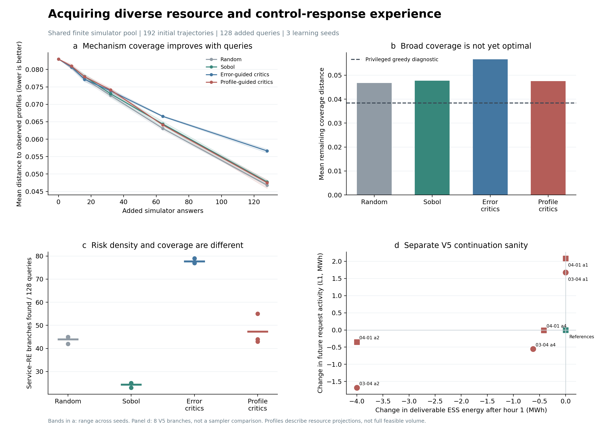
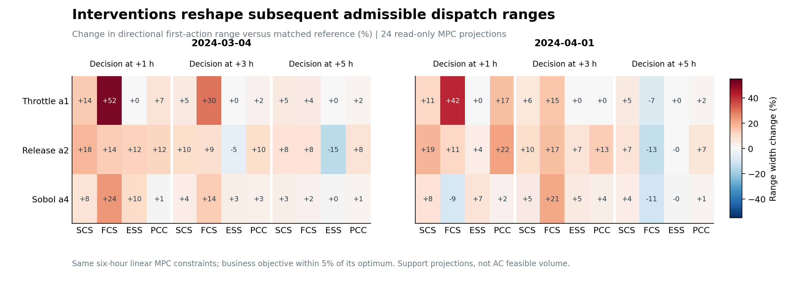

本轮只实施采集学习与物理接续核验，风险预警器、专家、融合和旧RL训练均为0。新采集学习器在CPU上训练，最终pilot为两种目标×3seed共6次；保留的smoke及被修正基线替代的v1合计另8次，本轮实际共14次采集学习器拟合。原V4/V5代码及硬件保持不变。

| 方法 | 剩余覆盖距离↓ | 较初始经验下降 | Service–RE发现数 | 延迟Service发现数 |
|---|---|---|---|---|
| Random | 0.04679 | 43.6% | 44.0/128 | 10.3/128 |
| Sobol | 0.04774 | 42.5% | 24.3/128 | 17.0/128 |
| Error-guided critics | 0.05664 | 31.8% | 77.7/128 | 4.3/128 |
| Profile-guided critics | 0.04751 | 42.7% | 47.3/128 | 10.0/128 |
以上为3seed均值。距离以同一384条历史新增候选的完整机制画像为固定评价全集，初始192条经验另列。原始数据来自6个训练source、12个物理初态和24个偏好情境；它是共享有限缓存上的新增答案揭示实验，不是全新source或连续动作域证明。历史建库为192+384条轨迹，本次每臂另计128次答案访问。
机制画像驱动相对误差驱动的剩余覆盖距离降低16.1%，重复画像从70.7降至30.7条，延迟Service发现从4.3增至10.0条；但当前没有稳定超过random/Sobol。误差驱动更倾向于获得Service–RE正例，而不一定覆盖更多不同响应。这说明“危险正例密度”和“不同后果机制的覆盖”是两个采集目标，不能相互代替。
画像由未来各小时ESS可放/可吸能量、下小时可放/可充功率、备用余量，以及后五小时MPC请求和偏好组成，三组按固定物理标尺平衡。风险标签、损失、等待、弃发严重度不参与画像。当前是资源方向投影和控制响应，未计算完整网络—服务可行域。
采集器只获得49维当前可见状态与51维归一化候选动作；选中之后Oracle才揭示未来画像、误差效用和标签。风险侧效用由同一冻结V4初始模型只读前向获得。两学习臂采用相同双critic、预热和更新预算，25%探索，唯一主要变化是奖励。它是TD3式critic引导的有限池上下文采集，连续actor虽有更新但不用于本轮候选选取。
新颖性随已揭示集合变化，replay按当前同情境集合重算并排除自身；未知画像不补零。Sobol按情境分别生成低差异序列，映射至该情境公共候选坐标范围，再选最近未查询候选；random同池均匀。所有方法使用共同情境访问顺序。v1的Sobol错误使用了含负值的快充目标区间和交错序列，已保留现场并修正；本文使用四臂全量v2，不混选seed。事后贪心诊断使用全库未来画像，剩余距离为0.03842；它有特权信息，仅用于衡量差距，不能作为可部署方法。
以source为单位，将3seed结果先平均，再对6source配对bootstrap 2000次。下列正差表示机制画像目标剩余距离更小。训练seed变化与source置信区间分开记录。
相对Error-guided critics：距离下降0.00913，95% CI [0.00572, 0.01208]。
相对Random：距离下降-0.00072，95% CI [-0.00197, 0.00042]。
相对Sobol：距离下降0.00023，95% CI [-0.00323, 0.00347]。
从两个V4保存的train初态出发，分别执行参考、限充、释放资源和一个Sobol动作，按V5常规有界Q实际演化六小时。8条分支、48小时全部AC核验有效；Voltage已确认正例0、未知0，Service–RE共同事件1条。该小实验用于接续和接口验证，不作为采集器优胜证据，也不代表已解决全量188小时数值未知或175小时反送边界。
每小时核验节点平衡、电压、线路、储能及备用边界、车辆和ESS能量守恒。正常Q状态分别为3小时原点已满足、40小时经有界Q满足、5小时电压已满足但反送许可仍需有功处置。40小时中有1小时通过pf初始化重试核验成功，约束和容差不变。
5小时额外有功处置中，两个release分支首小时分别记录2.313和1.926 MWh非EV削负荷，合计4.239 MWh。它们是当前保护求解器的实际输出，尚未证明是物理上不可避免的最小代价；因此本轮不把它们解释为必然的电压失效或资源挤压机制。代价与正常Q工作量分别保留，不能把最终48小时合规等同于全部无需额外处置。

复用8条真实接续的决策时view，在+1、+3、+5小时共24个状态只读调用原MPC约束构造器。对每个状态求SCS、FCS、ESS和PCC首小时合计功率的最小与最大值；每个端点均要求存在一条满足原六小时线性MPC约束的后续计划，业务目标不超过该状态最优值的5%增量。该目标是加权归一化的成本、服务、资源和调节项，不是金钱成本增加5%，也不是放宽物理容量5%。
结果显示干预会重塑不同方向的调度范围，并非整体一律收缩。例如03-04的release动作相对参考，在+1小时ESS功率范围宽度扩大12.5%，到+3小时缩小4.7%，+5小时缩小15.0%；04-01同类动作使+5小时FCS范围缩小13.3%。限充动作在03-04的+1小时FCS范围扩大52.0%，但04-01的+5小时反而缩小7.5%。这与“当前干预改变后续资源和控制选择”的研究命题直接对应，且具有方向性和时间依赖性。
图中是各方向的支持区间，端点可以由不同后续计划实现，不能把四个区间拼成一个都可同时实现的盒子，也不代表完整AC可行域体积。当前采集器尚未用该读出作奖励；它是本轮补充的机制测量，为下一步将资源画像奖励升级为可调度能力奖励提供依据。24次只读投影没有新增交通rollout或训练。
这一轮已把“更多危险后果”与“更丰富机制经验”分开量化，并直接测到了不同后续方向的扩大、收缩与时间反转。下一步优先把只读调度范围测量接入采集奖励，在相近动作之间寻找恢复边界两侧的成对经验；同时区分可被正常调度吸收的变化与必须付出处置代价的变化。预警器继续暂缓，先改善采集任务本身。
Set-Location -LiteralPath 'D:\博士资料包\科研\科研\AAAI_RL\tarp_37_information_acquisition'
powershell -NoProfile -ExecutionPolicy Bypass -File .\scripts\run_information.ps1 -Mode pilot -RunId information_pilot_v2 -Resume
已有运行的Resume核验并复用结果；新实验使用新RunId。V5原始记录位于artifacts/native_information/v5_information_sanity_v1，采集回放位于artifacts/information/information_pilot_v2。完整画像、查询顺序及来源统计均保留。再次生成图表可运行D:\anaconda\python.exe .\scripts\analyze_information.py --run-id information_pilot_v2，无需重新训练。